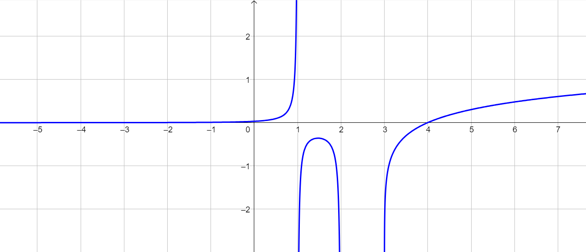

Compiti per casa
Ripassare le dispense disponibili
QUI
Esercizio 1
Ripassare le
equazioni e disequazioni goniometriche
facendo riferimento alla seguente pagina:
Equazioni e disequazioni goniometriche
In essa trovate
i riferimenti alle pagine del volume 4 dedicate alle equazioni e disequazioni goniometriche
alcune video-spiegazioni risalenti all'anno scorso.
Esercizio 2
Svolgere gli es. 143, 149, 159, 163 a pag. 1365 del libro di testo.
Svolgimento n° 159
Svolgimento n° 163
Esercizio 3
Svolgere gli es. 135 a pag. 1364 del libro di testo.
Esercizio 4
Consideriamo la funzione \(g\) rappresentata dal seguente grafico:

Individuare il
dominio
della funzione \(g\).
Stabilire per quali valori della \(x\) la funzione \(g\) assume valori
positivi
negativi
nulli